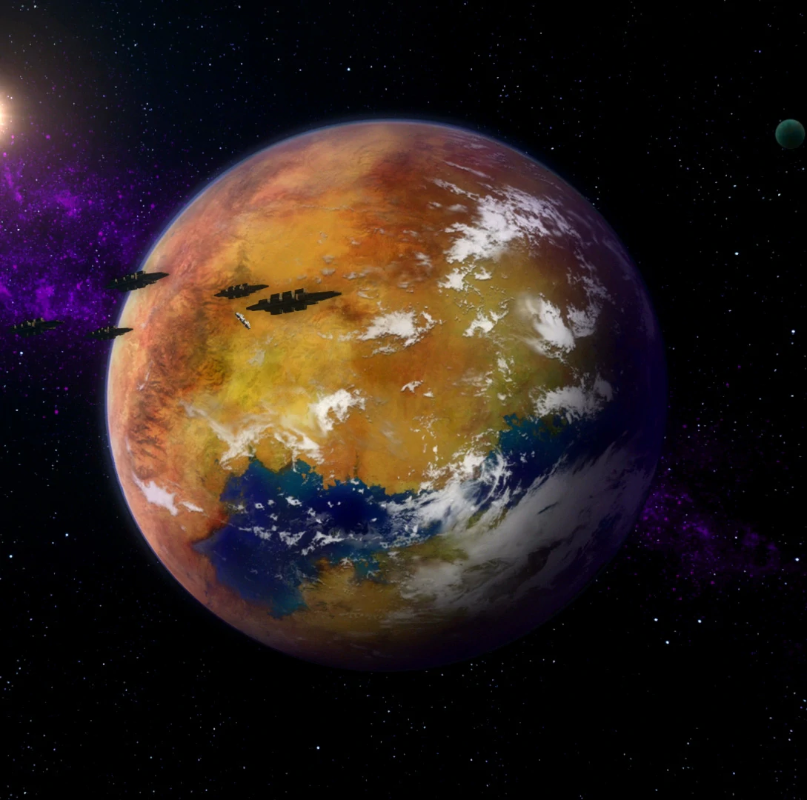

Hutta
Ursprünglich unter dem Namen Evocar bekannt, war die damals idyllische und nahezu paradiesische Welt die Heimat der intelligenten Evocii. Später wurde der Planet von den Hutts besiedelt, die sich der Bodenschätze bedienten, bis Evocar zu einer toten Welt verkam. Von den Hutts wurde der Planet schließlich zu Nal Hutta umbenannt, was in deren Sprache „prächtiges Juwel“ bedeutet.

Quesh
Quesh wurde während des Großen Galaktischen Krieges von der Galaktischen Republik entdeckt, jedoch nicht besiedelt, da Wissenschaftler Giftstoffe in der Atmosphäre fanden. Einige Jahre später erkannte ein junger Chemiker, der in alten Daten herumstöberte, dass die chemischen Stoffe auf Quesh stark dem Huttengift Venenit Shadaaga, dem Grundbestandteil starker Aufputschmittel, ähnelten.

Makeb
Makeb verfügt über einzigartige Gravitationseigenschaften, die dazu führten, dass er mit riesigen natürlichen Steinsäulen und einem verschachtelten Höhlensystem überzogen ist. Die einzigartigen Gravitaionseigenschaften, die unter anderem durch heftige Magnetstürme verursacht werden, bewirken, dass es nicht möglich ist mit etwas größerem als eine Fähre auf dem Planeten zu landen. Der Planet verfügt über eine Fülle einzigartiger Rohstoffe und beherbergt eine üppige Flora und Fauna.

Huttenraum
Letztes Update 10.07.2021
Nar Shaddaa
Während des Kalten Krieges zwischen dem Sith-Imperium und der Galaktischen Republik verblieb der Mond der Hutten neutral, sodass die mächtigen Herrscher des Kartells mit beiden Supermächten Geschäfte treiben konnte. Seitdem befand sich die Exchange und das Huttenkartell galaxisweiten Krieg, dessen Mittelpunkt auf dem kleinen Mond Nar Shaddaa liegt. Auch mit der Czerka Corporation gab es Konflikte, als ein korrupter Verwalter in den Casinos absahnte und dann verschwand.

Voss
Voss wurde 3653 VSY, kurze Zeit nach dem Vertrag von Coruscant, zufällig entdeckt. Zuerst glaubte man, der Planet sei nur von den technikaffinen, feindseligen Gormaks bewohnt, doch wenig später erfuhr man von einer zweiten Spezies, den Voss. Diese leben isoliert in einer einzigen Stadt, Voss-Ka, auf einem Gipfel. Da die Gormak die Voss als einen Fehler der Natur betrachten, führen sie einen erbitterten Krieg gegen diese zahlenmäßig extrem unterlegene Spezies. Die Voss überleben gegen die Gormaks dank der Führung ihrer Mystiker, stark machtsensitiven Angehörigen ihres Volkes mit seherischen Fähigkeiten.

Darvannis
Er existierte lange Zeit lediglich als Fußnote in Galaktischen Sternenkarten, da er weder über profitable Ressourcen noch über eine einheimische Spezies verfügte. Ein dichtes Asteroidenfeld machte jeglichen Versuch den Planeten zu erreichen zu einem riskanten Abenteuer, so dass viele Navigatoren den Planeten einfach ignorierten. Aus diesem Grund wurde der Planet bald zu einem bevorzugten Rückzugsort für Mitglieder des Hutt-Kartells, die Aufsehen vermeiden wollten. Zu der Zeit entstanden viele kleine aber reiche Marktplätze und Villen in denen der Markt für illegale Waffen und anderer Schwarzmarktware florierte.
